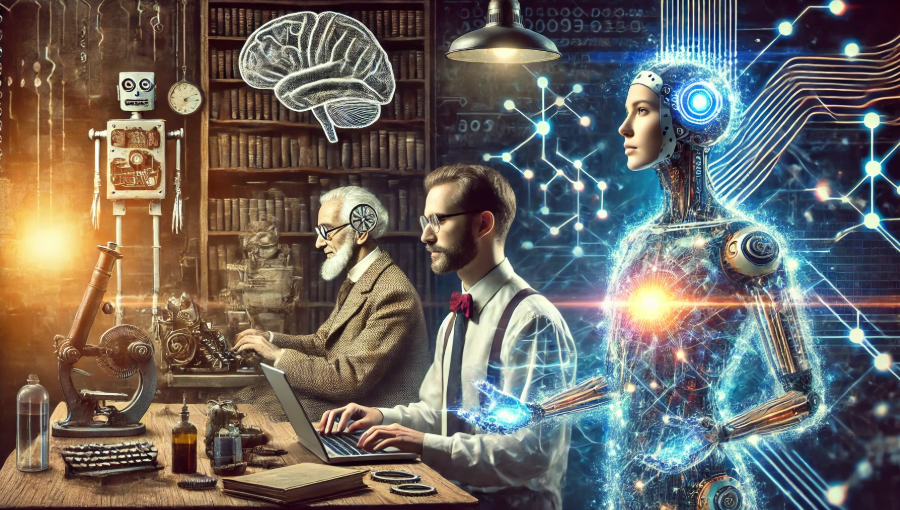

Geschiedenis van AI
Artificial Intelligence (AI) lijkt misschien een moderne technologie, maar de ideeën achter slimme machines bestaan al veel langer. Door de jaren heen zijn er verschillende belangrijke momenten geweest die de ontwikkeling van AI hebben gevormd.
-
1950 – De eerste ideeën over AI
De Britse wiskundige Alan Turing publiceert een artikel waarin hij de vraag stelt: "Kunnen machines denken?". Hij introduceert de Turingtest, een test om te bepalen of een computer zich zo kan gedragen dat een mens niet meer kan onderscheiden of hij met een mens of met een machine praat.
Lees hier meer over Alan Turing . -
1956 – De term Artificial Intelligence ontstaat
Tijdens de Dartmouth Conference wordt voor het eerst de term Artificial Intelligence gebruikt. Onderzoekers geloven dat het mogelijk moet zijn om machines te bouwen die kunnen leren en redeneren. -
1960 – Eerste AI-programma’s
Wetenschappers ontwikkelen de eerste programma’s die eenvoudige problemen kunnen oplossen, zoals wiskundige berekeningen en logische puzzels. De mogelijkheden zijn echter nog beperkt door de trage computers van die tijd. -
1970 – De eerste “AI-winter”
De verwachtingen van AI blijken te hoog. Computers zijn nog niet krachtig genoeg en veel projecten leveren minder op dan gehoopt. Hierdoor nemen investeringen en interesse tijdelijk sterk af. -
1997 – AI verslaat een wereldkampioen schaken
De computer Deep Blue van IBM verslaat schaakwereldkampioen Garry Kasparov. Dit wordt gezien als een belangrijke mijlpaal die laat zien dat computers complexe strategische taken kunnen uitvoeren.
Bekijk in dit fragment hoe Garry Kasparov wordt verslagen door Deep Blue: -
2000 – Doorbraak door meer data en snellere computers
Met de opkomst van internet, grote databestanden en snellere computers wordt AI steeds krachtiger. Technologieën zoals spraakherkenning, gezichtsherkenning en aanbevelingssystemen beginnen door te breken. -
2011 – AI in het dagelijks leven
Digitale assistenten zoals Siri verschijnen op smartphones. Hierdoor komen AI-toepassingen voor het eerst echt bij het grote publiek terecht. -
2015 – Oprichting van OpenAI
In 2015 wordt OpenAI opgericht door onder andere Elon Musk en Sam Altman. Het doel van deze organisatie is om kunstmatige intelligentie te ontwikkelen op een manier die veilig is en beschikbaar is voor iedereen. -
2016 – AI verslaat wereldkampioen Go
Het programma AlphaGo van Google DeepMind verslaat een wereldkampioen in het bordspel Go. Dit spel is extreem complex en werd lange tijd gezien als te moeilijk voor computers. -
2020 – AI helpt bij wetenschap en medische analyse
AI wordt steeds vaker gebruikt bij het analyseren van medische scans, het ontdekken van nieuwe medicijnen en het verwerken van enorme hoeveelheden data in onderzoek. -
2022 – Lancering van ChatGPT
In 2022 lanceert OpenAI ChatGPT, een geavanceerde chatbot die gebruik maakt van een groot taalmodel. ChatGPT kan vragen beantwoorden, teksten schrijven en gesprekken voeren met gebruikers. De technologie werd wereldwijd snel populair en liet zien hoe krachtig moderne AI-systemen kunnen zijn.
Bekijk hier de website van ChatGPT -
2023 – Doorbraak van generatieve AI
AI-systemen zoals chatbots en beeldgeneratoren kunnen nu teksten schrijven, afbeeldingen maken en mensen helpen bij programmeren, leren en werken. Hierdoor wordt AI voor miljoenen mensen een dagelijks hulpmiddel.
De ontwikkeling van Artificial Intelligence gaat nog steeds razendsnel. Veel experts verwachten dat AI in de toekomst een steeds grotere rol zal spelen in wetenschap, economie en het dagelijks leven.
